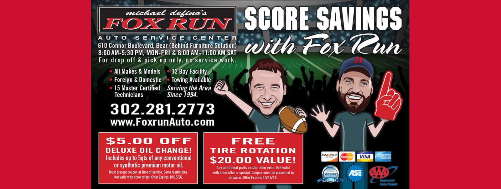
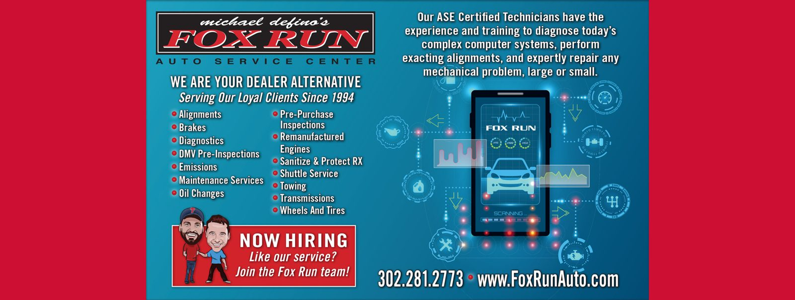
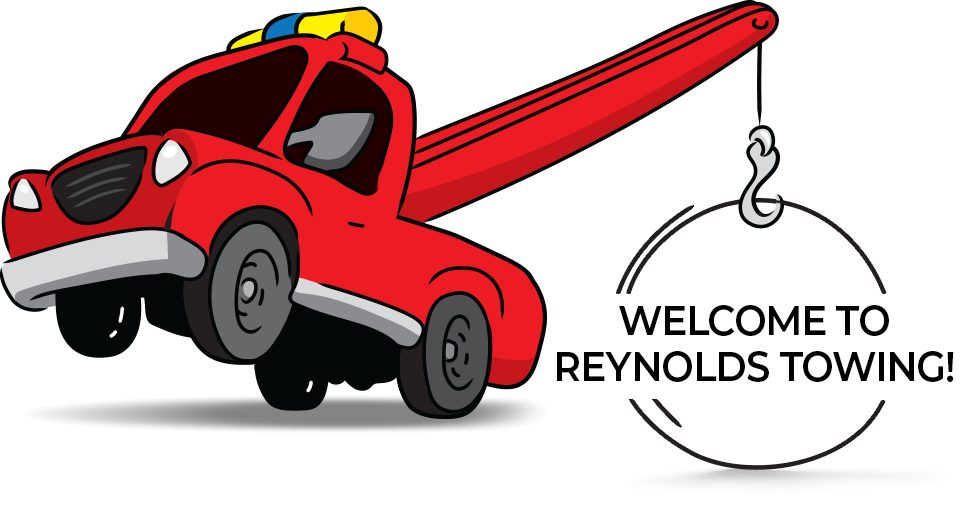
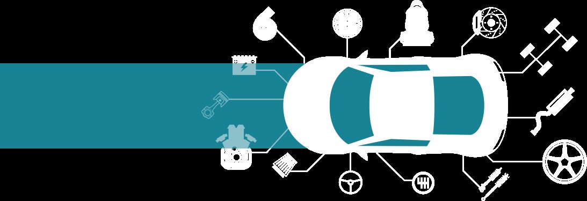
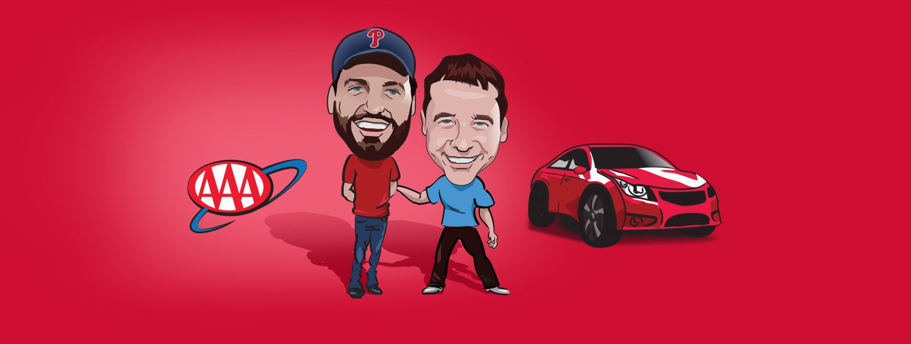

Factory Maintenance
Fluid services, tune-ups and timing belt replacements.

Auto repair and body shop serving Newark, Bear, Glasgow since over 30 years
Fluid services, tune-ups and timing belt replacements.
Provided by Reynolds Towing.
Available to take you home or pick you up after repairs.
Fox Run Auto has nine ASE certified technicians. They service all makes and models.
They offer in-house towing, shuttle service, and factory maintenance including timing belt replacements.

My van was overheating and I called and they immediately were able to fit us in.
This group is AWESOME! I always have GREAT service with Fox Run Auto Service Center!




610 Connor Boulevard, Bear, DE, 19701